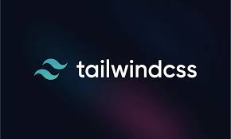
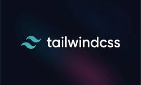

Full stack refers to the process of developing both the front-end and back-end of an application or website.
A full-stack developer is someone who can work on both the front-end and back-end of an application, which allows them to build applications from start to finish. Full-stack developers can work in-house or for a computer development company.
To become a full-stack developer, you can:Front-end development involves creating the part of the website that users interact with directly. This includes designing the layout, styling, and interactive elements. Key technologies used in front-end development.


 

Back-end development focuses on the server-side logic, database management, and application integration. It ensures that the front-end can communicate with the server and retrieve or store data as needed. Key technologies used in back-end development.


The MERN stack is a powerful combination of four technologies�MongoDB, Express.js, React.js, and Node.js�that work together to build modern, full-stack web applications. It enables developers to create applications using JavaScript for both the front-end and back-end, simplifying the development process.

The MEAN stack is a collection of technologies�MongoDB, Express.js, Angular, and Node.js�used to develop modern, dynamic, and full-stack web applications. Like MERN, it is JavaScript-based, making it easy to use for both front-end and back-end development.


The marquee tag in HTML is used to create a scrolling effect for text or images within a webpage. This tag allows content to move horizontally or vertically across the screen, adding a dynamic element to your web page. However, it is important to note that the [marquee] tag has been deprecated in HTML5 and is not recommended for use in modern web developmen
Example:-An alt tag in HTML is an attribute that provides a text description for an image.